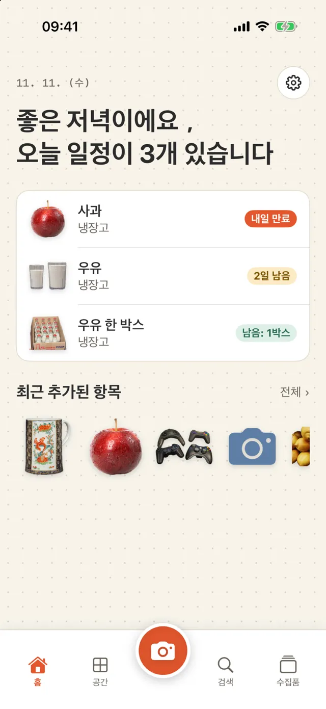
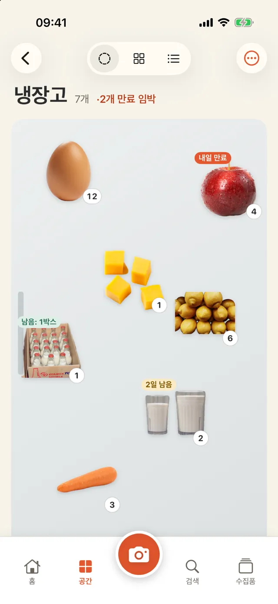
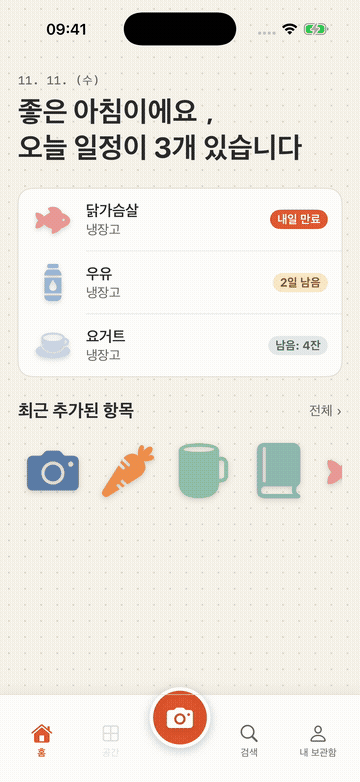
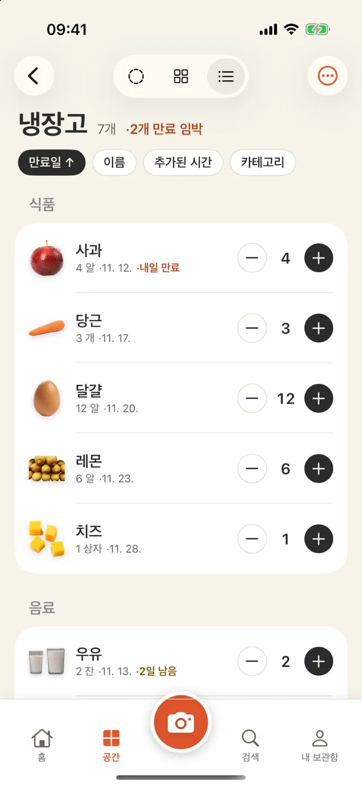
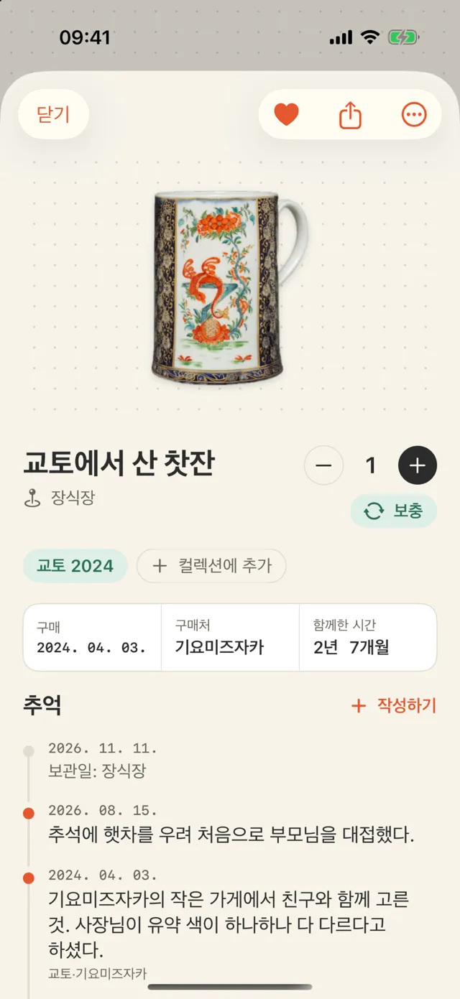
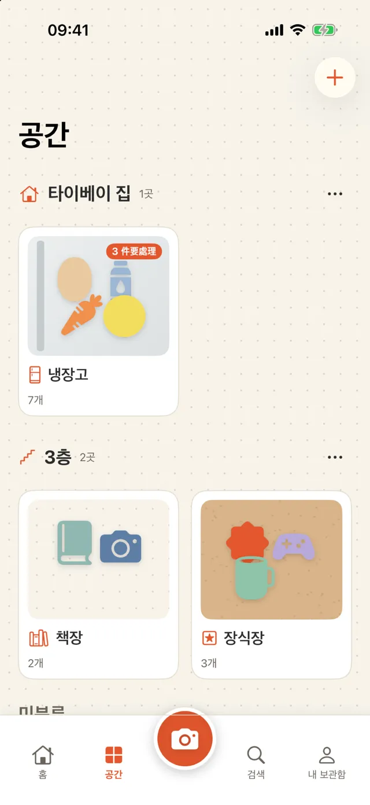
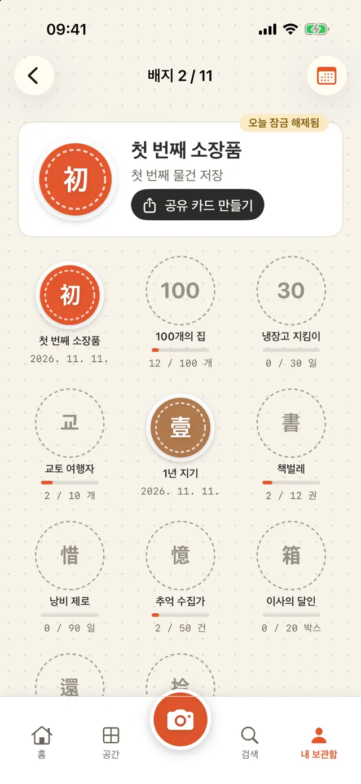

iPhone용 집안 물건·추억 기록 앱
사진을 찍어 물건을 기록하세요.
필요할 때 검색해 찾으세요.
냉장고의 우유, 수납실의 휴지, 책장의 책, 여행에서 가져온 컵을 사진으로 기록하세요. 어디에 있는지, 얼마나 남았는지, 언제 유통기한이 끝나는지 iPhone에서 확인할 수 있습니다.
App Store에 곧 출시됩니다- ✓ 무료 다운로드, 장소 3곳까지 무료
- ✓ 계정 불필요
- ✓ 데이터는 iPhone에 보관

추가하기
사진을 찍어 배경을 제거하고 저장하기
물건을 향해 카메라 셔터를 누르면 배경이 자동으로 제거됩니다. 같은 카메라로 바코드도 읽을 수 있습니다. 식품은 Open Food Facts, 책은 Open Library에서 조회합니다. 쇼핑 후에는 연속 스캔으로 여러 물건을 한 번에 저장할 수 있습니다.

보기 방식 바꾸기
진열·격자·목록으로 보기
진열 보기에서는 사진을 냉장고 문, 점무늬 종이 또는 코르크판 위에 놓고 위치와 크기를 바꿀 수 있습니다. 격자 보기는 물건을 찾을 때, 목록 보기는 재고를 확인할 때 사용하세요. 목록에서는 더하기·빼기 버튼으로 수량을 바꾸고, 스와이프해 다 쓴 물건을 표시할 수 있습니다.

유통기한 확인하기
포장에 적힌 날짜를 읽기
사진을 찍으면 포장에 인쇄된 유통기한을 읽습니다. 저장하기 전에 날짜를 확인하세요. 유통기한 며칠 전에 알림을 받을지 직접 정할 수 있습니다.

추억 남기기
간직한 물건에 이야기를 적기
여행에서 가져온 컵이나 친구에게 받은 선물에 사진, 날짜, 장소, 짧은 글을 추가하세요. ‘교토 2024’처럼 모음으로 묶을 수도 있습니다. ‘오늘의 추억’에서 지난 기록을 홈 화면에 다시 보여줍니다.

장소 정하기
냉장고, 800 수납실, 책장을 선택하거나 직접 만들기
냉장고, 800 수납실(깊이가 약 80cm인 출입형 수납실), 수납장, 책장, 옷장, 소장품 선반, 약상자, 이삿짐 상자 템플릿이 있습니다. 원하는 장소가 없으면 아이콘과 이름을 직접 정하세요. 필요하면 집이나 층별로 장소를 묶을 수 있습니다.

이럴 때 확인하기
- 장보기 전에 냉장고에 무엇이 있는지 확인하기
- 유통기한이 가까운 식재료부터 요리하기
- AA 건전지가 어디 있는지 찾기
- 책을 누구에게 빌려줬는지 확인하기
- 이삿짐 상자마다 넣은 물건 기록하기
- 여행 기념품 정리하기
- 약상자에서 유통기한이 지난 물건 확인하기
40초 영상으로 보기
냉장고를 세 가지 방식으로 보고, 수량을 바꾸고, 간직한 물건의 추억을 여는 모습을 보여줍니다.
AI 사용하기(선택 사항)
AI 없이도 모든 기능을 사용할 수 있습니다. AI를 사용하려면 두 가지 방식 중 하나를 고르세요. AI 버튼을 누를 때만 호출됩니다.
Apple 내장 기능
iPhone의 Apple Intelligence를 사용합니다. 무료이며 오프라인으로 처리되어 데이터가 iPhone 밖으로 나가지 않습니다. 지원되는 iPhone과 iOS 26 이상이 필요합니다.
직접 준비한 API 키
Gemini, Claude, DeepSeek 등을 사용할 수 있습니다. 키는 이 iPhone의 키체인에만 저장되며, 데이터는 당사 서버를 거치지 않고 선택한 서비스로 직접 전송됩니다.
- 이름 붙이기: 사진 속 물건을 인식해 분류와 단위를 제안합니다
- 이 장소 살펴보기: 냉장고에서 먼저 먹을 것, 수납실에 다시 채울 것, 약상자에서 유통기한이 지난 것을 확인합니다(의료 조언은 제공하지 않습니다)
- 문장으로 찾기: 동의어를 추가해 검색합니다
- 추억 글 다듬기: 입력한 짧은 글을 문단으로 정리하되 말하지 않은 내용은 더하지 않습니다
배지와 공유 카드 보기
냉장고에서 유통기한이 지난 물건 없이 30일을 보내면 ‘냉장고 지킴이’ 배지를 받습니다. 배지, 물건 이야기, 연간 기록은 이미지로 저장할 수 있습니다. 위치와 가격은 기본적으로 포함되지 않습니다.

기본 정보 확인하기
| 기기 | iPhone(iOS 18 이상) |
|---|---|
| 언어 | English, 繁體中文, 简体中文, 日本語, 한국어, ไทย |
| 가격 | 무료 다운로드(배너 광고 포함, 장소 3곳); Pro는 광고와 장소 제한을 없앱니다: 주 US$1, 월 US$3 또는 일회성 구매 US$5 |
| 계정 | 필요 없음 |
| 데이터 | 이 iPhone에만 보관, CSV로 내보내기 가능; 삭제한 물건은 30일 이내에 복원 가능 |
| 네트워크 | 바코드 조회와 선택한 AI 서비스를 사용할 때만 필요 |
제한 사항 확인하기
- 아직 iCloud 동기화나 가족 공유를 지원하지 않습니다
- 바코드 데이터베이스에 없는 상품은 직접 이름을 입력해야 합니다. 다음에 같은 바코드를 스캔하면 입력한 이름이 사용됩니다
- 배경 제거 결과는 사진에 따라 다릅니다. 제거에 실패하면 원본 사진을 사용합니다
데이터는 iPhone에 보관하기
- 계정과 서버가 없습니다
- 무료 버전에는 개인 맞춤이 아닌 광고만 표시되며 추적하지 않습니다
- 카메라와 사진은 사용자가 해당 기능을 사용할 때만 접근합니다